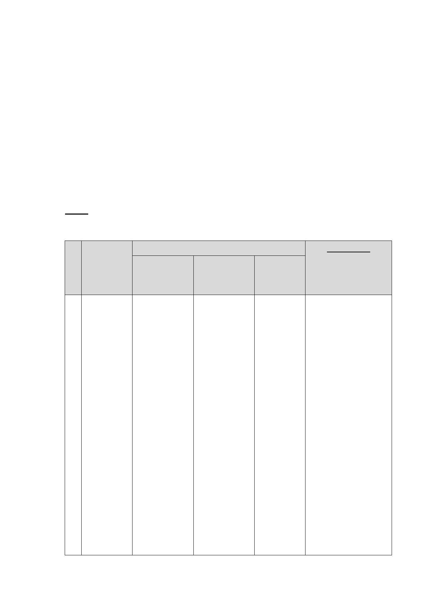

10432216400 號函復辦理情形。
四、依前開注意事項稽催程序規定，及市府前開函復說明，現清
查計有「臺北市中華電信股份有限公司 32 處基地都市計畫
通盤檢討（主要計畫及細部計畫）案」等 8 個計畫案逾 3
個月未提供資料以續行審議，爰依規定提會報告，並由市府
都發局補充說明目前辦理面臨之議題，以及預計辦理時程，
由委員會確定後續提會時程。
決議:各案決議詳如下表。
編 計畫案名
市府說明
都委會決議
號 辦理進度說明 後續應辦事項 預期提送
會議資料
時程
1 臺 北 市 中 本案依 103 年 待中華電信公 待 中 華 電 請市府洽中華電信公
華 電 信 股 8 月 11 日專案 司補充相關資 信 公 司 提 司了解該公司對於本
份 有 限 公 小 組 會 議 決 料，並經本局 送資料後 2 案續行審議之意願，
司 32 處基 議，於 103 年 評估後，續提 個月。
如現階段與市府尚難
地 都 市 計 8 月 26 日及 專 案 小 組 審
形成共識，建議市府
畫 通 盤 檢 103 年 12 月 27 查。
先行撤案。
討（主要計 日函請中華電
如已有階段性成果資
畫 及 細 部 信公司補充 32
料，請市府協助中華
計畫）案 處基地使用計
電信公司儘速提送會
畫等資料過
議資料到會，本會預
局，並經本局
計於 104 年 5 月召開
評估無使用計
專案小組。
畫之基地之公
共使用需求
後，續提貴會
審議，惟本局
迄今尚未收自
中華電信公司
之 32 處基地
使用計畫資
-2-